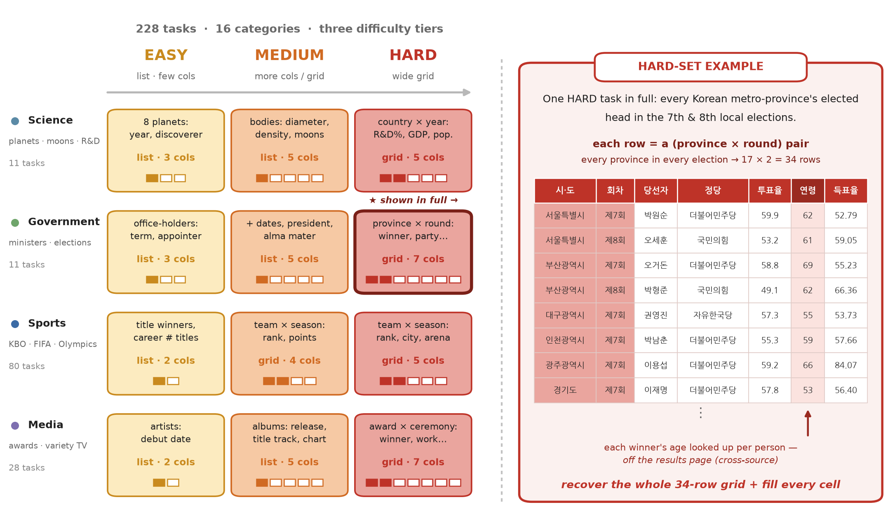
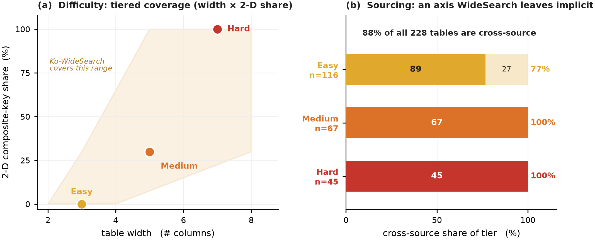
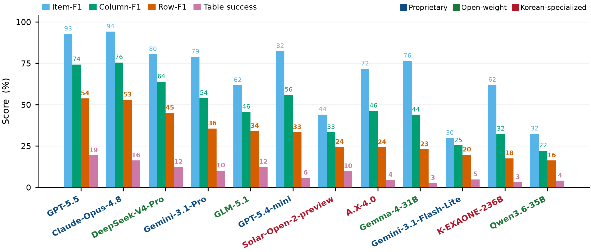
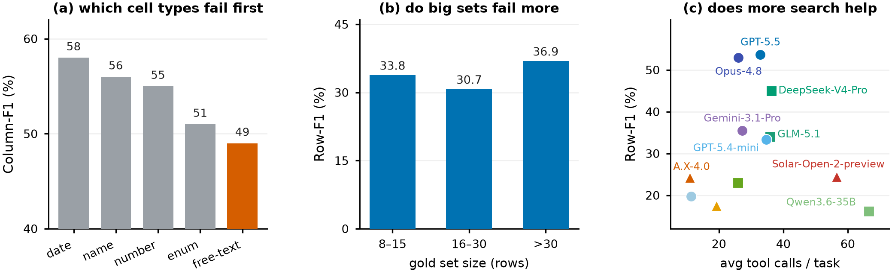
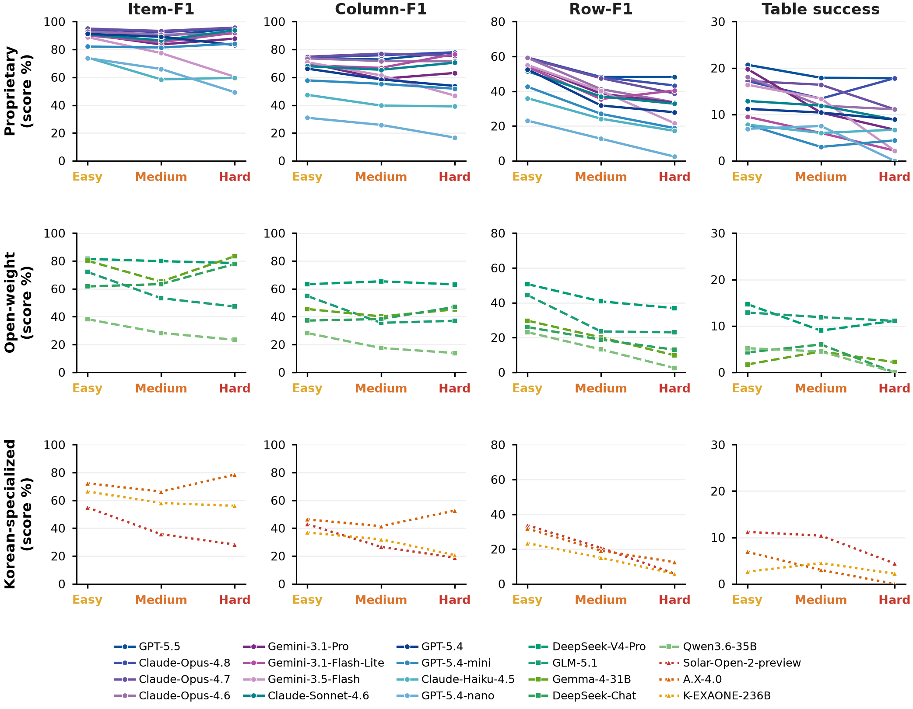
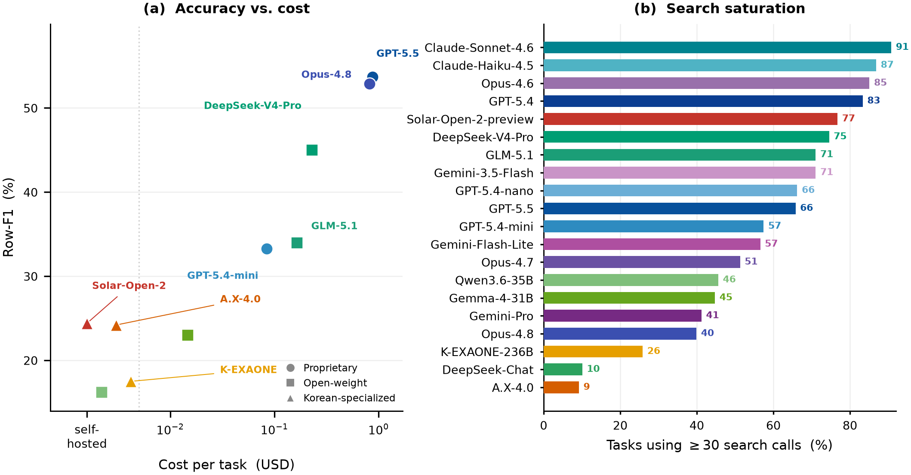
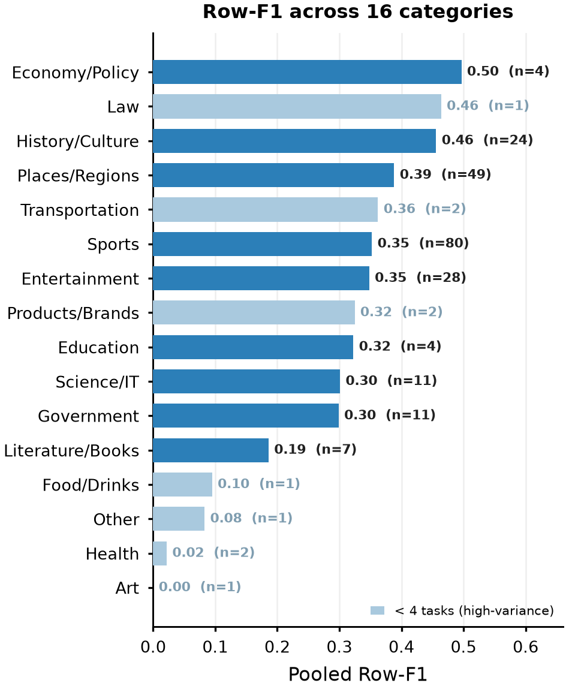
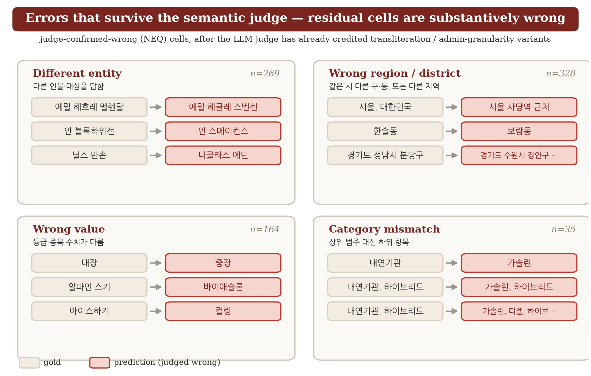
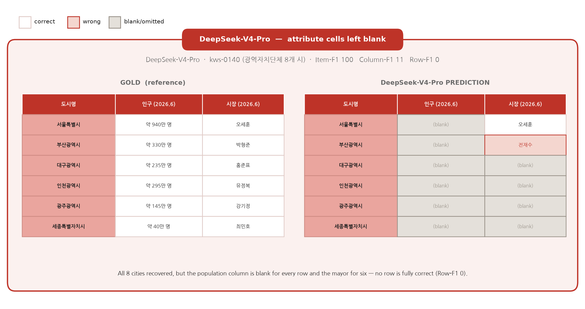

The one-line takeaway
What the benchmark asks
Enumerate the whole set, then fill every cell
Each task names a set-parent entity — a TV season, a dynasty, a league, an administrative region, an election — and asks for its full membership plus a per-item attribute table. Difficulty is set by two structural knobs dialed independently: table width (number of attribute columns) and a 2-D composite key (membership becomes a cross-product, e.g. team × season). From Easy to Hard, cross-product membership climbs from 0% to 100%.


What we found
Six findings that hold across twelve agents
Sets, not rows
Every model recovers membership far better than complete rows. Best Item-F1 is 92.8 while the best Row-F1 is only 53.7 — the loss is at the cell level, not in finding who belongs.
Harder knobs, lower scores
Row-F1 falls monotonically Easy → Medium → Hard (0.41 → 0.27 → 0.22). Adding columns and a 2-D composite key reliably degrades accuracy.
More search ≠ better
The two heaviest searchers (Qwen3.6 at 66.5 calls/task, Solar at 56.6) score lowest. GPT-5.5 and Opus-4.8 reach the top with moderate search. Effort doesn't buy completeness.
Spend ≠ completeness
Frontier costs ~10× the best open model for +9 Row-F1. DeepSeek-V4-Pro is the value winner — Row 45.0 at $0.23/task, 3rd overall, ahead of every proprietary model bar GPT-5.5 and Opus.
Korean specialists don't close it
A.X-4.0 (24.2), Solar-Open-2 (24.4) and K-EXAONE-236B (17.5) all land at or below the open-weight floor — far from frontier. Korean specialization alone is not the answer.
Finding > formatting
Per cell-type: free-text (49) and enum (51) fail most; dates (58) and names (56) come out right. The hard part is finding and normalizing the value, not formatting the table.
Leaderboard
The Item-vs-Row gap is universal

| Model | Item-F1 | Col-F1 | Row-F1 | Tab.Succ | Parse |
|---|---|---|---|---|---|
| GPT-5.5 PROP | 92.8 | 74.3 | 53.7 | 19.3 | 98.2 |
| Claude-Opus-4.8 PROP | 94.1 | 75.5 | 52.9 | 16.2 | 99.6 |
| DeepSeek-V4-Pro OPEN | 80.4 | 63.9 | 45.0 | 12.3 | 87.3 |
| Gemini-3.1-Pro PROP | 78.9 | 53.9 | 35.5 | 10.1 | 86.0 |
| GLM-5.1 OPEN | 61.7 | 45.6 | 34.0 | 12.3 | 66.2 |
| GPT-5.4-mini PROP | 82.3 | 55.9 | 33.3 | 5.7 | 98.2 |
| Solar-Open-2-preview KR | 44.0 | 33.3 | 24.4 | 9.7 | 62.7 |
| A.X-4.0 KR | 71.7 | 46.2 | 24.2 | 4.4 | 93.0 |
| Gemma-4-31B OPEN | 76.4 | 43.9 | 23.0 | 2.6 | 93.0 |
| Gemini-3.1-Flash-Lite PROP | 29.8 | 25.3 | 19.7 | 4.8 | 33.0 |
| K-EXAONE-236B KR | 61.9 | 32.3 | 17.5 | 3.1 | 82.9 |
| Qwen3.6-35B OPEN | 32.4 | 22.2 | 16.2 | 4.0 | 39.0 |
Full pool, n = 228, pass@1. Bold = best per column. Parse = fraction of runs that emit a scorable table (low parse rates reflect models that search heavily then return prose instead of a table).
Why it's hard — the diagnostics
Knobs degrade accuracy; effort doesn't recover it
We probe the Item-vs-Row gap from four angles — which cell types fail, whether big sets are harder, whether more search helps, and what the surviving errors actually are. Every chart points the same way: the bottleneck is finding and normalizing each value, not finding the set or formatting the table.





A failure, cell by cell
The set is right; the rows are empty
The headline gap is easiest to see in a single table. Below, DeepSeek-V4-Pro is asked for Korea's eight metropolitan cities with each city's population and mayor. It recovers all eight cities (Item-F1 100) — but leaves the population column blank for every row and gets the mayor wrong or missing for six, so not one row is fully correct (Row-F1 0). High Item-F1 and zero Row-F1 in the same task is the pattern, not the exception.

Construction & release
Built by synthesize-and-verify, released leakage-aware
One comparator, two jobs
A single normalization-aware comparator is shared between gold construction and grading — so stable date and count columns are not over-dropped on formatting alone (date-granularity, thousands-comma/unit numbers, name variants). The 228 tables span 16 categories and 190 distinct set-parent entities, screened against 5,744 questions from 8 benchmarks with 0 overlap.
Leakage-aware release
The pipeline and scorer are released open (MIT). The gold tables are shared on request rather than posted on the open web — a live-web agent can otherwise search up a publicly posted gold table and copy the answer. This follows GAIA (private test behind a leaderboard) and BrowseComp (canary string).
Citation
BibTeX
@inproceedings{jeong2026kowidesearch,
title = {Ko-WideSearch: A Korean Breadth-Search Benchmark
for Exhaustive Set Enumeration by Web Agents},
author = {Jeong, Minbyul},
year = {2026},
note = {Upstage AI},
url = {https://github.com/minstar/Ko-widesearch}
}